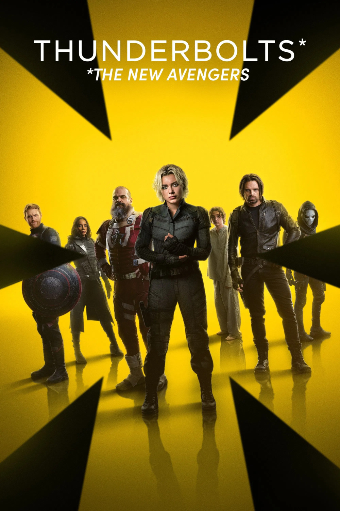

Мировая премьера: 2 мая 2025
Слоган: Не супер. И не герои. Но не сдаются.
Сюжет: Попав в смертельную ловушку Валентины Аллегры де Фонтейн, разношёрстная команда антигероев (Елена Белова, Баки Барнс, Красный Страж, Призрак, Таскмастер и Джон Уокер) вынуждена отправиться на опасное задание, во время которого им предстоит заглянуть в самые тёмные уголки своего прошлого. Сумеет ли эта несовместимая группа разочарованных изгоев преодолеть разногласия, обрести искупление и стать чем-то большим, пока ещё не слишком поздно?
Режиссёр: Джейк Шрейер
В основе: Комиксы о Громовержцах (США, выходят с 1997, авторы – Курт Бьюсик и Марк Багли)
Серия: Кинематографическая Вселенная Марвел
В ролях:
| Флоренс Пью | Елена Белова |
| Джулия Луи-Дрейфус | Директор Валентина Аллегра де Фонтейн |
| Уайатт Расселл | Джон Уокер / Агент США |
| Дэвид Харбор | Алексей Шостаков / Красный Страж |
| Льюис Пуллман | Боб Рейнольдс |
| Ханна Джон-Кэймен | Эйва Стар / Призрак |
| Себастьян Стэн | Конгрессмен Джеймс "Баки" Барнс / Зимний Солдат |
| Джеральдин Вишванатан | Мел |
| Уэнделл Пирс | Конгрессмен Гэри |
| Ольга Куриленко | Антония Дрейкова / Таскмастер |
| Крис Бауэр | Холт |
| Вайолет МакГроу | Юная Елена |
Бюджет: $ 180 млн.
Кассовые сборы в США: $ 190 млн.
Кассовые сборы в мире: $ 382 млн.
Продолжительность: 1 ч. 54 мин.
Рейтинг: 7.1